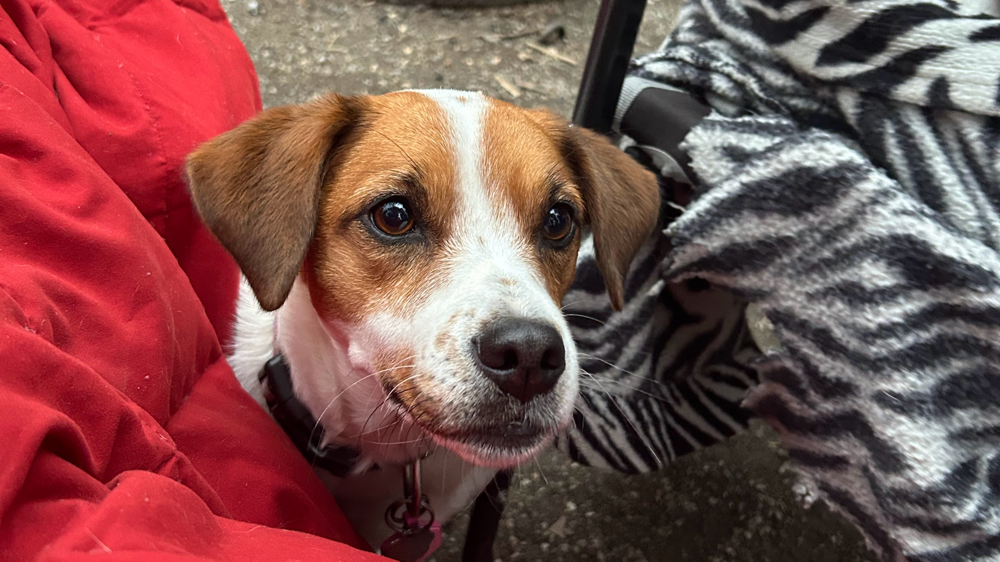
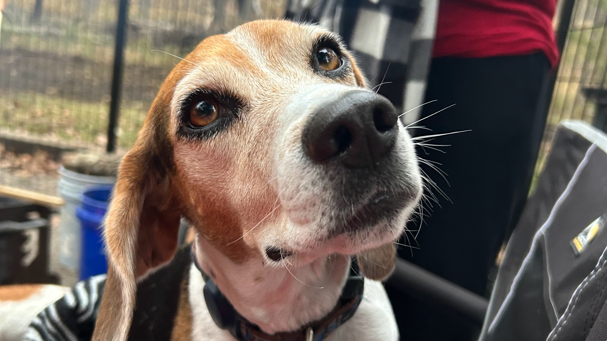

Welcome to my website!
Explore my world of plants and creativity. Dive into my projects, get to know me, and feel free to reach out!
About Me
You might know me as Kyran but my friends call me Achilles. I am known for my crazy obsessions with rubberducks and Plants. I am known for suprising people with baked goods. I am also known for somehow always knowing things most people don't. I have a passion for coding and technology, which has driven me to learn various programming languages and web development is my next challenge to master.